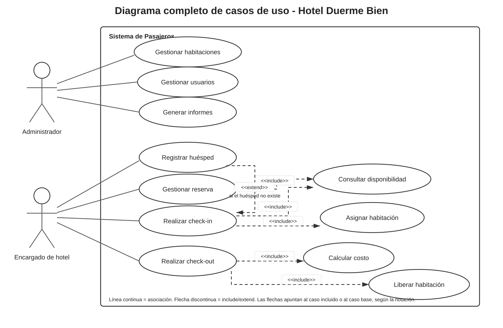
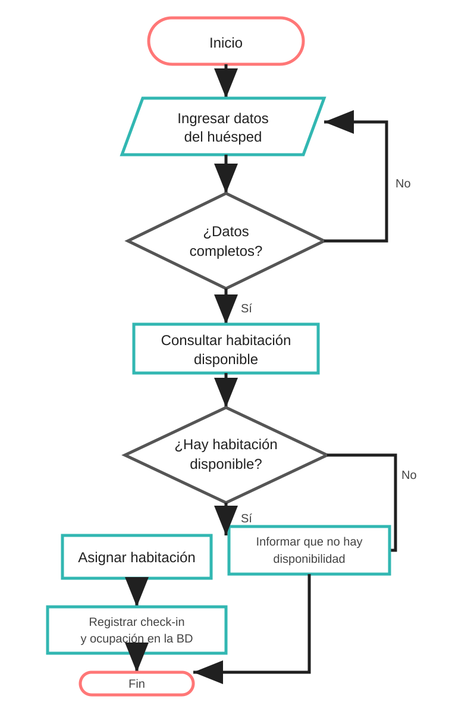
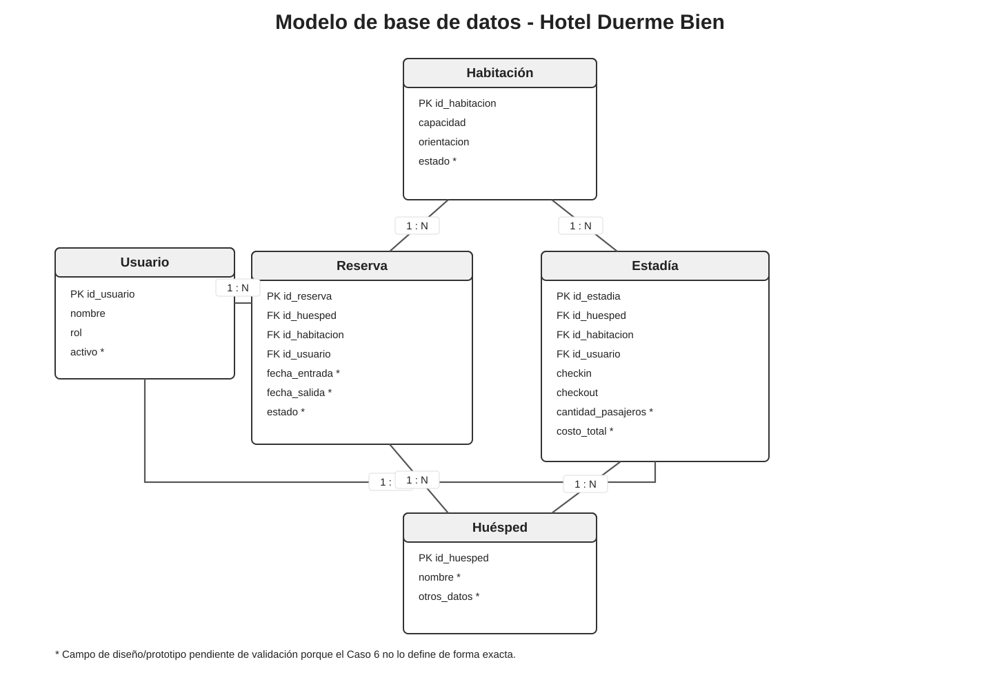
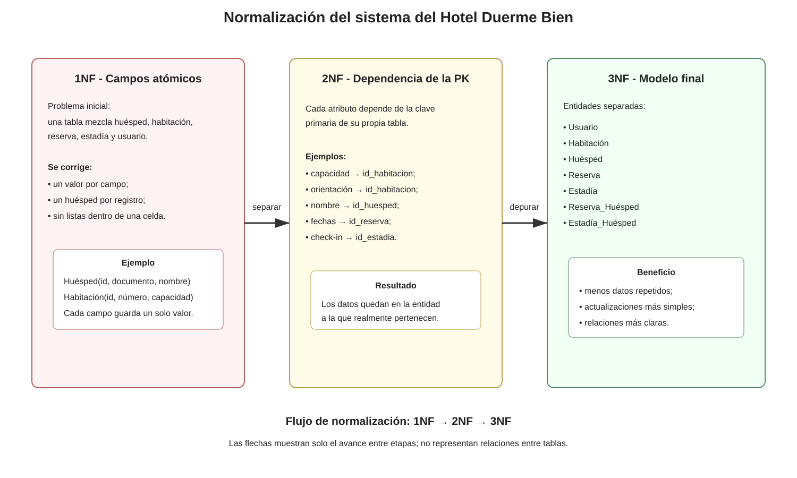
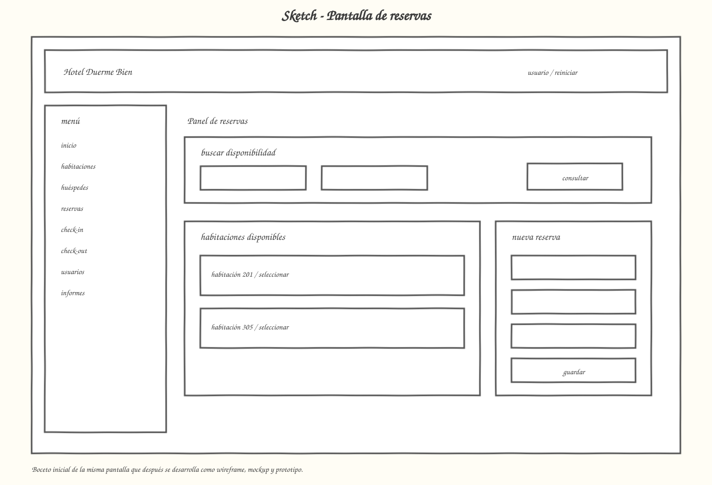
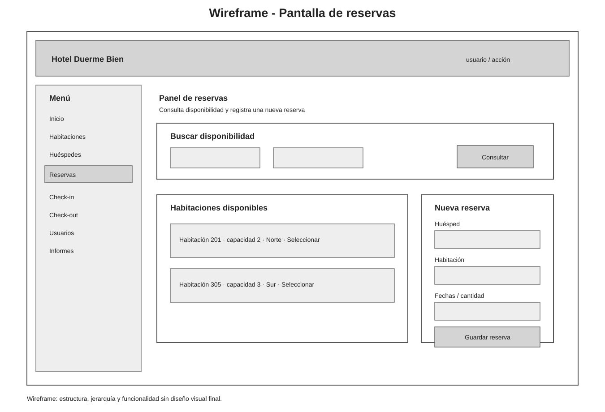
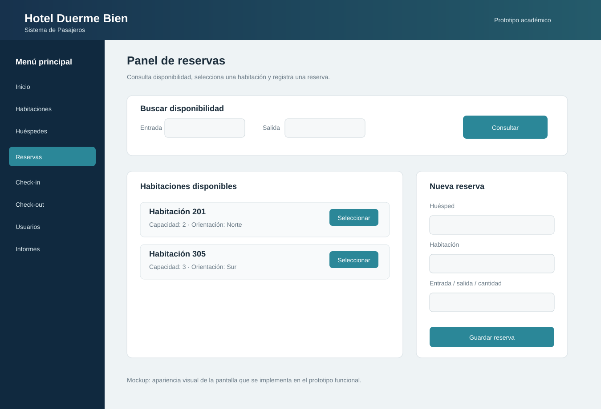

1. Caso 6 - Sistema de Pasajeros de Hotel
Objetivo del sistema
Administrar el registro de huéspedes y la asignación de habitaciones, controlando ocupación y costos.
Funciones clave entregadas
- Registro de habitaciones y sus características: capacidad y orientación.
- Registro de huéspedes con asignación a habitaciones.
- Control de ocupación y disponibilidad.
- Cálculo automático de costos por pasajero.
- Gestión de usuarios: administrador y encargados de hotel.
- Informes de ocupación y reservas.
Procesos de negocio posibles (UA3)
- Proceso de check-in y asignación de habitaciones.
- Proceso de check-out y liberación de habitaciones.
- Proceso de registro y gestión de reservas.
2. Evaluación 1 - Informe de la toma de requerimientos
La pauta indica completar el documento siguiendo una plantilla de especificación de requerimientos IEEE 830 adaptada.
Introducción
Propósito, alcance, público objetivo y definiciones.
Descripción general
Perspectiva del producto, funciones generales, clases de usuario, entorno operativo, restricciones, supuestos y dependencias.
Requisitos específicos preliminares
Requisitos funcionales y no funcionales.
Reglas de negocio
Reglas conocidas y supuestos separados para no confundirlos con requisitos oficiales.
Toma de requerimientos
Entrevista simulada incorporada dentro de la especificación.
Factibilidad
Análisis inicial de factibilidad técnica y de negocio.
Requisitos funcionales identificados
| ID | Requisito | Origen |
|---|---|---|
| RF-01 | Registrar y actualizar habitaciones con capacidad y orientación. | Caso 6 |
| RF-02 | Registrar huéspedes. | Caso 6 |
| RF-03 | Asignar huéspedes a habitaciones. | Caso 6 |
| RF-04 | Controlar ocupación y disponibilidad. | Caso 6 |
| RF-05 | Registrar y gestionar reservas. | Caso 6 / UA3 |
| RF-06 | Realizar check-in y registrar la asignación de habitación. | Caso 6 / UA3 |
| RF-07 | Realizar check-out y liberar la habitación. | Caso 6 / UA3 |
| RF-08 | Calcular automáticamente el costo por pasajero. | Caso 6 |
| RF-09 | Gestionar usuarios administrador y encargado de hotel. | Caso 6 |
| RF-10 | Consultar informes de ocupación y reservas. | Caso 6 |
3. Evaluación 2 - Informe de requerimiento y modelado UML
La pauta solicita ajustar los requerimientos con la retroalimentación de Evaluación 1 y modelar el sistema con los siguientes elementos.
Diagrama de casos de uso
Representa actores, funciones y relaciones.
Diagrama de flujo
Representa el proceso de check-in y asignación.
Diagrama de base de datos
Representa entidades y relaciones necesarias.
Wireframes / Mockups
Prototipo de interfaz solicitado por la pauta.
Tablero Kanban
Planificación inicial del trabajo.
Objetivo
Definir claramente qué debe hacer el sistema y representarlo a nivel funcional y de datos.
4. UML y diagramas
El material de casos de uso indica usar actores por rol, nombres de casos de uso comenzando con verbo, asociaciones actor-caso sin flecha y relaciones <<include>> / <<extend>> solo cuando corresponde.
Diagrama de casos de uso

Versión principal para la entrega.
Diagrama de flujo

Proceso de check-in y asignación de habitación.
5. Base de datos y normalización
Modelo de base de datos

Normalización

El material de normalización trabaja 1NF, 2NF y 3NF con el objetivo de evitar redundancia, evitar problemas de actualización y garantizar dependencias.
6. Sketch, Wireframe, Mockup y Prototipo
El material de interfaz distingue cuatro etapas y las presenta en este orden: Sketch → Wireframe → Mockup → Prototipo.
Sketch

Boceto inicial de distribución.
Wireframe

Estructura y jerarquía en escala de grises.
Mockup

Apariencia visual aproximada del producto final.
{kind=link}
{kind=link}
7. Prototipo funcional
El material señala que el prototipo debe ser navegable y permitir probar interacción, estados de botones, validación de formularios y otros elementos con los que el usuario interactúa.
8. Planificación Kanban
| Por hacer | En proceso | Terminado |
|---|---|---|
| Incorporar retroalimentación real de Evaluación 1. | Revisión final de coherencia. | Definir alcance del sistema. |
| Validar fórmula exacta de costos. | Organizar requerimientos con IEEE 830 adaptada. | |
| Validar datos obligatorios del huésped. | Identificar actores, casos de uso y reglas de negocio. | |
| Validar permisos exactos por perfil. | Crear diagramas de casos de uso, flujo y datos. | |
| Confirmar estados y reglas definitivas de reservas. | Crear sketch, wireframe, mockup y prototipo. |
9. Archivos y enlaces del repositorio
Evaluación y documentación
Requerimientos
Evaluación 2
Trazabilidad
Trazabilidad con materiales
{kind=link}
{kind=link}
{kind=link}
{kind=link}
{kind=link}
{kind=link}
{kind=link}